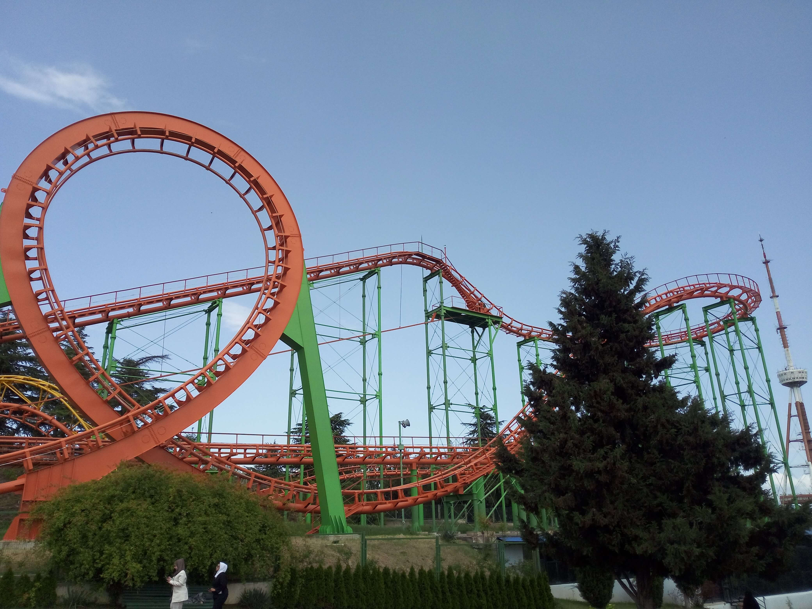

Tbilisi
Tbilisi, the capital of Georgia, is a city where history, architecture, and modern urban life come together. Located along the Kura River, the city is known for its historic streets, distinctive buildings, hillside views, and lively cultural spaces. From its panoramic viewpoints to peaceful green parks and creative meeting places, Tbilisi offers many different experiences. These photographs capture my personal travel memories of the city.

City View
Panoramic views of Tbilisi, its rooftops, historic architecture, and surrounding hills.
Explore Photos
Fabrika Tbilisi
A creative urban space known for its artistic atmosphere, cafés, and cultural activities.
Explore Photos
Mtatsminda Park
A popular hilltop park offering beautiful views over Tbilisi and a variety of attractions.
Explore Photos
Mziuri Park
A green urban park providing peaceful walking paths and relaxing outdoor spaces.
Explore Photos